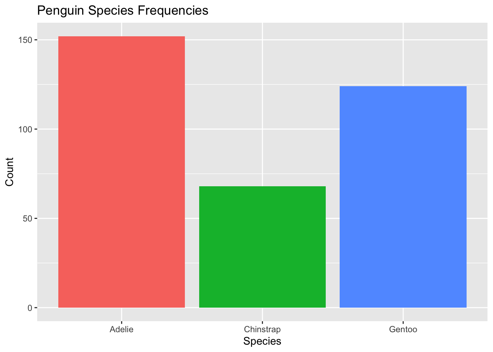
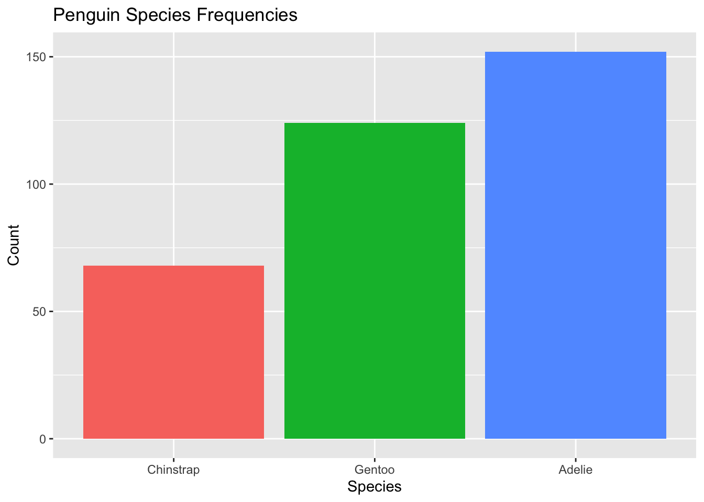
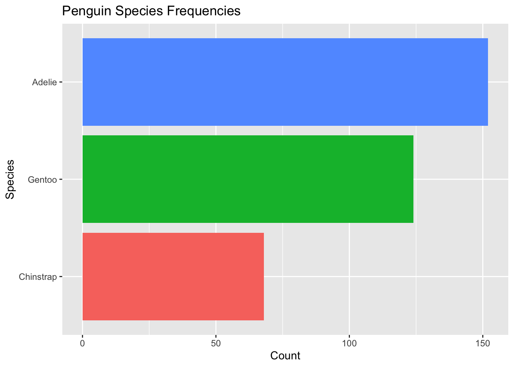
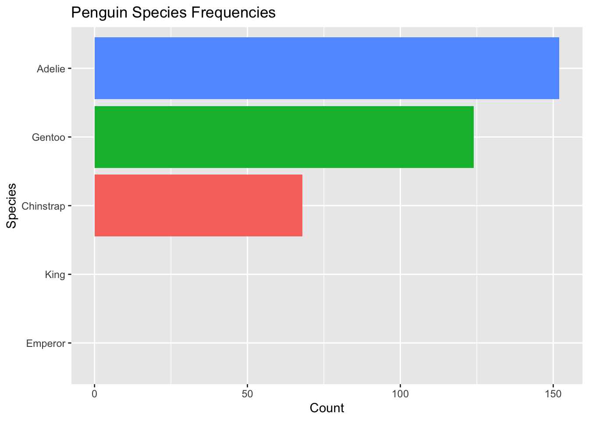
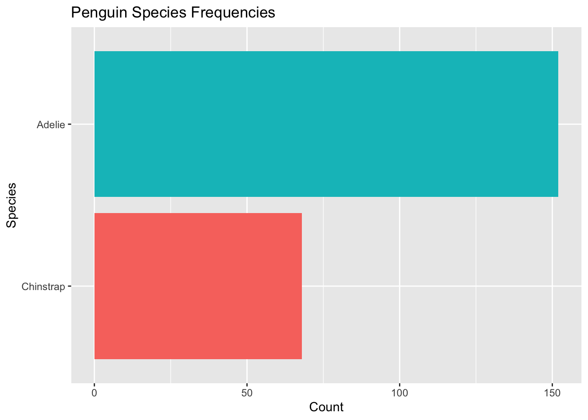

library(tidyverse) #also loads forcats!
library(palmerpenguins)
library(gapminder)Lecture 6B: Factors
October 9, 2025
From today’s class, students are anticipated to be able to:
- Reorder levels within factors according to various principles
Video Lecture
Lecture Slides
Set-up
Throughout this lecture, we will be using functions from the following packages:
Factors
“There is no other object that creates as much trouble as factors.” - Patrick Burns, “The R Inferno”.
In R, we use factors to represent categorical variables: variables that take on a fixed number of known values (i.e. levels). For example, in the penguins data set, species is a factor with three levels: “Adelie”, “Chinstrap”, and “Gentoo”. We can see this by looking at the str() (structure) of the tibble:
str(penguins)tibble [344 × 8] (S3: tbl_df/tbl/data.frame)
$ species : Factor w/ 3 levels "Adelie","Chinstrap",..: 1 1 1 1 1 1 1 1 1 1 ...
$ island : Factor w/ 3 levels "Biscoe","Dream",..: 3 3 3 3 3 3 3 3 3 3 ...
$ bill_length_mm : num [1:344] 39.1 39.5 40.3 NA 36.7 39.3 38.9 39.2 34.1 42 ...
$ bill_depth_mm : num [1:344] 18.7 17.4 18 NA 19.3 20.6 17.8 19.6 18.1 20.2 ...
$ flipper_length_mm: int [1:344] 181 186 195 NA 193 190 181 195 193 190 ...
$ body_mass_g : int [1:344] 3750 3800 3250 NA 3450 3650 3625 4675 3475 4250 ...
$ sex : Factor w/ 2 levels "female","male": 2 1 1 NA 1 2 1 2 NA NA ...
$ year : int [1:344] 2007 2007 2007 2007 2007 2007 2007 2007 2007 2007 ...or we can explicitly look at the class and levels of the variable of interest by:
class(penguins$species)[1] "factor"levels(penguins$species)[1] "Adelie" "Chinstrap" "Gentoo" Under the hood, R stores a factor with (say) 3 levels as a numeric vector containing integers between 1 and 3, paired with a character vector of length 3 that identifies the mapping between the numbers 1, 2, and 3 and the levels.
This is not immediately obvious, because R will print factors using the character string levels rather than the numbers that it stores:
set.seed(100) #make reproducible (more on this later)
penguins %>%
slice_sample(n=10) %>% #take 10 random rows
pull(species) #output the species only [1] Gentoo Adelie Gentoo Adelie Chinstrap Chinstrap Adelie
[8] Adelie Gentoo Chinstrap
Levels: Adelie Chinstrap GentooThis dual nature of factors creates a whole slew of hidden traps and headaches, especially for new R users!
Caution
Sometimes factors are coded (i.e., written) in the data as integers. Without explicitly telling R, R will assume any numeric data are just regular old numbers.
Always ensure that factors are explicit in your code!
For example, suppose in the penguins data set than instead of their names, species had levels “1”, “2”, and “3’ where”1” could represent Gentoo, “2” Adelie, and 3 “Chinstrap” penguins. So, instead of having the names of penguin species as strings, they are coded as numeric values.
penguins2 <- penguins %>%
mutate(species = recode(species, "Gentoo" = 1, "Adelie" = 2, "Chinstrap" = 3))
str(penguins2)tibble [344 × 8] (S3: tbl_df/tbl/data.frame)
$ species : num [1:344] 2 2 2 2 2 2 2 2 2 2 ...
$ island : Factor w/ 3 levels "Biscoe","Dream",..: 3 3 3 3 3 3 3 3 3 3 ...
$ bill_length_mm : num [1:344] 39.1 39.5 40.3 NA 36.7 39.3 38.9 39.2 34.1 42 ...
$ bill_depth_mm : num [1:344] 18.7 17.4 18 NA 19.3 20.6 17.8 19.6 18.1 20.2 ...
$ flipper_length_mm: int [1:344] 181 186 195 NA 193 190 181 195 193 190 ...
$ body_mass_g : int [1:344] 3750 3800 3250 NA 3450 3650 3625 4675 3475 4250 ...
$ sex : Factor w/ 2 levels "female","male": 2 1 1 NA 1 2 1 2 NA NA ...
$ year : int [1:344] 2007 2007 2007 2007 2007 2007 2007 2007 2007 2007 ...We see here that R assumes that species is a numeric variable, not a categorical variable. To ensure R knows that species is categorical, we can use:
penguins2 <- penguins2 %>% #overwrite existing tibble
mutate(species = as.factor(species)) #overwrite species to be a factor using as.factor
str(penguins2)tibble [344 × 8] (S3: tbl_df/tbl/data.frame)
$ species : Factor w/ 3 levels "1","2","3": 2 2 2 2 2 2 2 2 2 2 ...
$ island : Factor w/ 3 levels "Biscoe","Dream",..: 3 3 3 3 3 3 3 3 3 3 ...
$ bill_length_mm : num [1:344] 39.1 39.5 40.3 NA 36.7 39.3 38.9 39.2 34.1 42 ...
$ bill_depth_mm : num [1:344] 18.7 17.4 18 NA 19.3 20.6 17.8 19.6 18.1 20.2 ...
$ flipper_length_mm: int [1:344] 181 186 195 NA 193 190 181 195 193 190 ...
$ body_mass_g : int [1:344] 3750 3800 3250 NA 3450 3650 3625 4675 3475 4250 ...
$ sex : Factor w/ 2 levels "female","male": 2 1 1 NA 1 2 1 2 NA NA ...
$ year : int [1:344] 2007 2007 2007 2007 2007 2007 2007 2007 2007 2007 ...Now we see that species is a factor with three levels!
Nevertheless, factors are important and worth the pain. Many functions throughout the R landscape expect categorical variables to be coded as factors. For example, when making plots in either ggplot2 or in base R, we need factors in order to map categorical variables to aesthetic elements like colour.
To make our lives easier, we will work with factors through the forcats package loaded as part of the tidyverse.
Reordering Factor Levels
By default, factors are ordered alphabetically or numerically. However, in many cases factors have a logical ordering they should follow. For example, you may have an education variable dictating the level of schooling a student is currently in (i.e., elementary, secondary, post-secondary, graduate). It is natural to order the factor in this way. In other cases, you may just want to reorder the levels of a factor so that it plots a certain way. Reordering data can be useful for both data visualization and model fitting.
To see the current ordering of a factor variable, we can call levels().
levels(penguins$species)[1] "Adelie" "Chinstrap" "Gentoo" We see here, the levels of the factor are ordered alphabetically.
Reordering Levels of a Factors Manually
There are many ways to reorder the levels of a factor in R. To reorder the levels of the factor, we can use built in R functions such as ordered():
penguins3 <- penguins %>%
mutate(species = ordered(species, levels = c("Gentoo", "Chinstrap", "Adelie"))) #change species to an ordered factor with the specified ordering
levels(penguins3$species) #see the levels of species[1] "Gentoo" "Chinstrap" "Adelie" Now, when we call str() on the penguins data, we see that the factor is explicitly ordered, with out new ordering:
str(penguins3)tibble [344 × 8] (S3: tbl_df/tbl/data.frame)
$ species : Ord.factor w/ 3 levels "Gentoo"<"Chinstrap"<..: 3 3 3 3 3 3 3 3 3 3 ...
$ island : Factor w/ 3 levels "Biscoe","Dream",..: 3 3 3 3 3 3 3 3 3 3 ...
$ bill_length_mm : num [1:344] 39.1 39.5 40.3 NA 36.7 39.3 38.9 39.2 34.1 42 ...
$ bill_depth_mm : num [1:344] 18.7 17.4 18 NA 19.3 20.6 17.8 19.6 18.1 20.2 ...
$ flipper_length_mm: int [1:344] 181 186 195 NA 193 190 181 195 193 190 ...
$ body_mass_g : int [1:344] 3750 3800 3250 NA 3450 3650 3625 4675 3475 4250 ...
$ sex : Factor w/ 2 levels "female","male": 2 1 1 NA 1 2 1 2 NA NA ...
$ year : int [1:344] 2007 2007 2007 2007 2007 2007 2007 2007 2007 2007 ...Reordering Levels of a Factors Based on a Condition Using forcats
Perhaps we want to reorder levels based on some condition, perhaps the ordering levels by frequency, or perhaps by the another summary statistic (which could be useful for effective data visualization!). We can easily do so using the forcats package. Let’s look again at the original penguins data set and look at the frequency of each species using ggplot:
ggplot(penguins, aes(x = species, fill = species)) + #use species variable (no y needed)
geom_bar() + #draw a bar chart
theme(legend.position = "none") + #remove redundant legend
xlab("Species") + #add x axis label
ylab("Count") + # add y axis label
ggtitle("Penguin Species Frequencies") #add a title
This data visualization is fine. But there’s one step we can do to make it even better: order bars by largest to smallest (or smallest to largest) so readers can easily spot which species is the most common. This is especially useful when the number of levels is large!
We can do this in two ways: edit the original tibble to have new factor ordering, or order the factors directly in the ggplot2 call so that the original tibble isn’t overwritted. We will show both ways. We will use the forcats package in both examples.
Option A: Reorder Tibble Directly
To reorder the factor levels according to the frequency in the tibble, we can use fct_reorder():
penguins4 <- penguins %>% #initialize a new dataset
mutate(species = fct_infreq(species))
levels(penguins4$species)[1] "Adelie" "Gentoo" "Chinstrap"We see the ordering is Adelie, Gentoo, and then Chinstrap. If you look at the previous plot, you’ll see that these are ordered from smallest to largest frequencies. The original ordering was alphabetical.
To order from smallest to largest, we had fct_rev() to the chain:
penguins4 <- penguins %>% #initialize a new dataset
mutate(species = species %>%
fct_infreq() %>%
fct_rev())
levels(penguins4$species)[1] "Chinstrap" "Gentoo" "Adelie" Now the levels are reversed!
We can then plot our data using penguins4:
ggplot(penguins4, aes(x = species, fill = species)) + #use species variable (no y needed)
geom_bar() + #draw a bar chart
theme(legend.position = "none") + #remove redundant legend
xlab("Species") + #add x axis label
ylab("Count") + # add y axis label
ggtitle("Penguin Species Frequencies") #add a title
Of course, an even better visualization would involve flipping the axes:
ggplot(penguins4, aes(x = species, fill = species)) + #use species variable (no y needed)
geom_bar() + #draw a bar chart
theme(legend.position = "none") + #remove redundant legend
xlab("Species") + #add x axis label
ylab("Count") + # add y axis label
ggtitle("Penguin Species Frequencies") + #add a title
coord_flip()
Note
It may look like they are ordered from largest to smallest, but they are actually ordered from smallest to largest. When flipped, ggplot puts the first level on the bottom.
Option B: Reorder the Factor in the ggplot Call
We can do these steps directly in ggplot without overwriting or making a new tibble!
penguins %>% #this is the original data frame with alphabetical ordering
mutate(species = species %>%
fct_infreq() %>% #order by frequency
fct_rev()) %>% #reverse ordering
ggplot( aes(x = species, fill = species)) + #no longer specify the data set in ggplot() as this is passed in by the pipe %>%
geom_bar() +
theme(legend.position = "none") +
xlab("Species") +
ylab("Count") +
ggtitle("Penguin Species Frequencies") +
coord_flip()
We get the exact same plot with a single chunk of code! And, the original tibble penguins remains unchanged with the alphabetical ordering of the species factors.
levels(penguins$species)[1] "Adelie" "Chinstrap" "Gentoo" Answer below! No peaking until you’ve attempted this problem!
gapminder %>%
filter(continent == "Asia", year == 2007) %>% #filter by countries in Asia
mutate(country = fct_reorder(country, gdpPercap)) %>% #change ordering of country by gdpPercap
ggplot(aes(country, gdpPercap)) +
geom_point() +
coord_flip() +
scale_y_continuous("GDP per Capita, 2007", labels = scales::dollar_format()) +
xlab("Country")
Expanding Factor Levels
Perhaps we may want to visualize that in our data set, there are no Emperor or King penguins. To do so, we can add “Emperor” and “King” as possible factor levels for species in our penguins data set. We do so by fct_expand()
penguins %>% #this is the original data frame with alphabetical ordering
mutate(species = species %>%
fct_expand("King", "Emperor") %>% #NEW: expand levels to include king and emperor
fct_infreq() %>%
fct_rev()
) %>%
ggplot( aes(x = species, fill = species)) +
geom_bar() +
theme(legend.position = "none") +
xlab("Species") +
ylab("Count") +
ggtitle("Penguin Species Frequencies") +
coord_flip() +
scale_x_discrete(drop = FALSE) #NEW: do not drop empty factor levels
Now we add to the visualization that there were no King or Emperor penguins collected in the data.
Removing Factor Levels
Let’s suppose we were only interested in comparing Adelie and Chinstrap penguins. We could drop the Gentoo level using forcats by:
penguins_no_gentoo <- penguins %>%
filter(species %in% c("Adelie", "Chinstrap")) %>%
droplevels()
levels(penguins_no_gentoo$species)[1] "Adelie" "Chinstrap"We can also do this along with the ggplot call by:
penguins %>% #this is the original data frame with alphabetical ordering
mutate(species = species %>%
fct_infreq() %>%
fct_rev()
) %>%
filter(species %in% c("Adelie", "Chinstrap")) %>% #NEW: filter only these species
droplevels() %>% #NEW: drop if not adelie or chinstrap species
ggplot( aes(x = species, fill = species)) +
geom_bar() +
theme(legend.position = "none") +
xlab("Species") +
ylab("Count") +
ggtitle("Penguin Species Frequencies") +
coord_flip() +
scale_x_discrete(drop = FALSE) #NEW: do not drop empty factor levels
Worksheet A5
Try your hand at using factors by working through the factors portion of Worksheet A5.
Finished attempting all of the questions? Then do the optional R4DS Factors reading, and maybe even do some of the exercises for extra practice.
Additional Resources
Video lecture: Special Data Types in R: Dates, Times, and Factors
Chapter IV of https://stat545.com/
The forcats package page and reference guide on page.